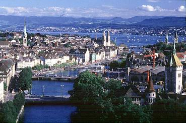

The International Workshops on Automated Deduction in Geometry (ADG) have become a forum to exchange ideas and views, to present research results and progress, and to demonstrate software tools. Applications of ADG to CAGD/CAD, computer vision and geometry education presented at the previous two workshops held in Beijing, August 1998 and Toulouse, September 1996 shed new light on the perspectives of ADG. The third workshop ADG 2000 to be held in Zurich, Switzerland, September 25-27, 2000 will continue ADG's emphasis on theory and algorithms, implementation, experiments, and applications to science, engineering and industry.
| Deadline for extended abstract submission: Notification of acceptance or rejection: Workshop taking place: Deadline for full paper submission: |
June 20, 2000 July 20, 2000 September 25-27, 2000 November 20, 2000 |
Specific topics for ADG 2000 include (but are not limited to):
|
Shang-Ching Chou (Wichita, USA) Luis Fariñas del Cerro (Toulouse, France) Andreas Dress (Bielefeld, Germany) Desmond Fearnley-Sander (Hobart, Australia) Xiao-Shan Gao (Beijing, China) Hoon Hong (Raleigh, USA) Deepak Kapur (Albuquerque, USA) Jürgen Richter-Gebert (Co-chair, Zurich, Switzerland) |
Bernd Sturmfels (Berkeley, USA) Dongming Wang (Co-chair, Grenoble/Paris, France) Volker Weispfenning (Passau, Germany) Neil White (Gainesville, USA) Walter Whiteley (Toronto, Canada) Franz Winkler (Linz, Austria) Lu Yang (Chengdu, China) |
Potential participants of ADG 2000 are invited to submit an extended abstract of three or more pages or a full paper describing their work to be presented at ADG 2000. The submitted extended abstracts and full papers will be reviewed by members of the program committee (PC) for presentation at the workshop. Electronic submissions are preferred, and should be sent to both of the PC co-chairs:
|
Prof. Jürgen Richter-Gebert Theoretische Informatik ETH Zentrum Haldeneggsteig 4 / Weinbergstrasse CH-8092 Zürich, Switzerland E-mail richter@inf.ethz.ch Fax +41 1 632 1172 |
Dr. Dongming Wang Laboratoire d'Informatique de Paris 6 Université Pierre et Marie Curie - CNRS 4, place Jussieu F-75252 Paris Cedex 05, France E-mail wang@calfor.lip6.fr Fax +33 1 44 27 40 42 |
Authors of the extended abstracts and full papers accepted for presentation at the workshop will be invited to submit their full and/or revised papers for publication in the proceedings of ADG 2000 after the workshop. The submitted papers will be formally reviewed by PC members and external referees. It is expected that the accepted papers will be published as a volume in the LNAI series by Springer-Verlag. The proceedings of ADG '96 and ADG '98 appeared as LNAI 1360 and LNAI 1669 respectively.
The workshop ADG 2000 will take place at
ETH
Zurich (Federal Institute of Technology) in Switzerland.
The presentations will be in the IFW building
(Department for Computer Science).
For general visitor information click
here.
Facilities for slides and computer demonstrations will be provided.
Zurich

For other details (registration, travel, lodging, etc.) click here.
Bibliography on Geometric Reasoning